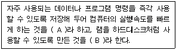

PC정비사-2급 (2008-02-03 기출문제)
1과목: PC유지보수
1. PC를 처음 조립할 때, 가장 기본적인 부팅 테스트를 하기위해 반드시 필요한 부품이 아닌 것은?
- CD-ROM
- 메인보드
- 파워 서플라이
- CPU
(정답률: 84%)

2. 하드디스크를 설치할 때 주의할 사항으로 올바른 것은?
- 하드디스크의 용량이 클 때는 구형 바이오스에서 용량을 지원하지 않는 경우도 있다.
- 하드디스크의 데이터 케이블 연결 커넥터는 방향이 바뀌어도 상관없다.
- P-ATA 하드디스크의 전원 케이블은 별도로 연결할 필요가 없다.
- P-ATA 하드디스크의 경우, 점퍼를 이용하여 마스터와 슬레이브 드라이브를 구분할 수 없다.
(정답률: 58%)
3. BIOS 설정 값이 저장되는 장소는?
- CPU
- RAM
- CMOS
- CACHE
(정답률: 83%)
4. SCSI 방식의 HDD를 새로 설치하여 정상적으로 인식되었다. 하지만 SCSI 방식의 HDD를 부팅 디스크로 사용하여 부팅이 되지 않는다. 이러한 경우 부팅이 가능하도록 하기 위해 수행해야 되는 작업으로 올바른 것은?
- 같이 연결되어 있는 IDE 방식의 HDD 부트 섹터 오류인가 검사한다.
- SCSI 방식의 HDD 점퍼 설정을 MASTER로 변경한다.
- 메인보드 BIOS에서 부팅 순서를 SCSI로 가장 먼저 부팅하도록 설정하였는지 확인한다.
- IDE 방식의 CDROM을 사용 중이라면 SCSI 방식으로 교체한다.
(정답률: 70%)
5. BIOS 설정에서 할 수 없는 작업은?
- System Date/Time 설정
- Floppy Disk Drive 설정
- Disk Partition 설정
- Disk 부팅 순서 설정
(정답률: 61%)
6. CPU가 CAS/RAS에 신호를 보내어 메모리의 정보가 도착할 때까지의 시간은?
- Lead
- Delay
- Latency
- Integrity
(정답률: 58%)
7. PnP(Plug & Play)에 대한 설명 중 잘못된 것은?
- Windows 98에서도 PnP가 지원된다.
- PnP 기능이 정상적으로 동작되기 위해서는 운영체제, 주변기기, 바이오스가 모두 PnP를 지원할 수 있어야 한다.
- PnP가 지원되는 장치는 Windows 장치 관리자에 장치가 나타나지 않는다.
- Windows XP에서는 PnP와 NON-PnP 두 장치를 모두 지원한다.
(정답률: 65%)
8. 컴퓨터뿐만 아니라 각종 전자기기에서 발생하는 인체에 유해한 파장인, 전자파를 규제하기 위한 규격이 아닌 것은?
- VDT(Video Display Terminal)
- TCO(The Swedish Confederation of Professional Employees)
- FCC(Federal Communication Committee)
- CE(Certification for the European-union)
(정답률: 73%)
9. 케이스에 있는 HDD LED가 정상적으로 연결되어 있을 경우 확인할 수 있는 것은?
- 전원 공급 장치의 이상 확인
- CMOS의 설정 오류 확인
- HDD의 연결 상태 확인
- HDD의 오류 여부 확인
(정답률: 78%)
10. 부팅할 때 “Bad or missing Command Interpreter”라는 메시지가 나올 경우, 예상되는 에러 및 조치는?
- 드라이브에 부팅 가능한 디스크가 없는 경우로 부팅 가능한 디스크로 재부팅한다.
- command.com 파일이 깨졌거나 없어진 경우로 파일을 복사해 준다.
- 롬 칩이 고장 난 경우로 CMOS 설정을 확인하고 재설정한다.
- 하드디스크의 부트 영역이 손상된 것으로 다시 포맷한다.
(정답률: 54%)
11. Windows 최적화에 대한 설명으로 잘못된 것은?
- 불필요한 시작프로그램을 정리하면 부팅시간이 빨라진다.
- 가상메모리를 최적의 설정 값으로 설정하면 성능이 향상된다.
- 하드디스크의 캐시를 증가시키면 시스템의 속도를 향상시킬 수 있다.
- 시스템 가동시 플로피 디스크 드라이브 검색을 생략하면 부팅속도가 느려진다.
(정답률: 77%)
12. PC의 사용을 제한하기 위해 PC의 암호를 BIOS에서 설정하였으나 이를 분실하였다. 분실한 패스워드를 복구하기 위한 방법으로 올바른 것은?
- 하드디스크의 부트 섹터를 초기화한 후 다시 부팅하여 비밀번호를 다시 설정한다.
- 메인 보드의 CMOS Clear Jumper를 Short시켜 CMOS를 초기화 시킨 후 다시 비밀번호를 설정한다.
- Windows 응급 복구용 Booting 디스켓으로 부팅을 하여 CMOS 비밀번호를 다시 설정한다.
- Power Off 후 전원코드를 분리하면 5초 후에 비밀번호가 초기화되므로 다시 설정한다.
(정답률: 78%)
13. 컴퓨터를 조립한 후 전원 버튼을 눌렀으나 아무런 반응이 없을 경우 이를 해결하기 위한 방법으로 잘못된 것은?
- 파워 서플라이에 공급되는 전원을 확인한다.
- 메인 보드의 이상 유무를 확인한다.
- 메인 보드의 전원 신호 연결 케이블이 올바로 연결되어 있는지 확인한다.
- 메인 보드의 배터리가 방전되어 있을 수 있으므로, 배터리를 새 것으로 교체한다.
(정답률: 69%)
14. 컴퓨터 조립 후 전원을 넣었더니 LED와 쿨링팬은 정상으로 작동하는데 아무런 소리도 없고, 부팅도 되지 않는다. 즉 POST 진행이 되지 않는데, 그 이유로 가능성이 가장 적은 것은?
- CPU가 정확하게 장착되지 않았다.
- 메인보드 BIOS를 업그레이드하는 도중 정전되었다.
- 디스플레이 어댑터가 장착되지 않았다.
- 메인보드가 파손되었거나, 불량 제품이다.
(정답률: 50%)
15. 필요한 부품들만 새로 구매하여 컴퓨터의 성능 향상을 위한 업그레이드(Upgrade) 방법에 대한 설명 중 잘못된 것은?
- DDR-SDRAM을 추가로 장착할 경우 기존 RAM의 용량과 같은 크기의 RAM을 장착해야 한다.
- 일반적으로 CD-ROM이나 플로피 디스크는 메인보드 업그레이드 후에도 사용이 가능하다.
- CPU만 업그레이드 할 경우 메인보드에서 지원하는 CPU의 종류만 업그레이드가 가능하므로 메인보드 매뉴얼을 잘 살펴본다.
- 그래픽 카드는 메인보드의 그래픽 카드 슬롯 규격을 확인하고 올바른 규격의 그래픽 카드로 업그레이드 한다.
(정답률: 74%)
2과목: PC운영체제
16. NTFS(NT File System)에 관한 설명 중 잘못된 것은?
- 용량이 큰 하드디스크 분할 영역에 있는 파일들을 매우 효과적으로 관리한다.
- Windows NT, DOS, Windows XP, OS/2가 모두 기본적으로 NTFS 볼륨을 사용할 수 있다.
- 파일 압축 기능을 지원한다.
- 파일이나 디렉터리에 접근 로그를 유지할 수 있다.
(정답률: 69%)
17. 다중 프로그래밍 환경에서 하나 또는 그 이상의 프로세서가 실행이 불가능한 특정 사건을 무한정 기다리는 상태는?
- Swapping
- Overlay
- Pipelining
- Dead Lock
(정답률: 67%)
18. 발생된 자료나 정보를 일정 기간이나 단위로 수집해 일괄적으로 처리하는 데이터 처리 방식은?
- Batch Processing
- On-Line Processing
- Real-Time Processing
- Time Slice Processing
(정답률: 68%)
19. PC의 운영체제로 사용되지 않는 것은?
- DOS
- JAVA
- Linux
- Windows XP
(정답률: 85%)
20. Windows XP에서 현재 실행중인 응용프로그램이나 열려 있는 폴더를 닫으려고 할 때 사용되는 단축키는?
- Alt ＋ X
- Ctrl ＋X
- Alt ＋ F4
- Ctrl ＋ F4
(정답률: 89%)
21. 다음 Windows의 버전 중 기본 커널이 다른 하나는?
- Windows 95
- Windows 98
- Windows ME
- Windows XP
(정답률: 47%)
22. Windows XP에서 '.Lnk' 확장자를 갖는 파일에 대한 설명 중 잘못된 것은?
- 연결 정보를 가지고 있어, 파일을 삭제하면 연결된 원본 프로그램이 제거 될 수 있으므로 주의한다.
- 단축 아이콘과 관계가 있다.
- 시스템에 여러 개 존재할 수 있다.
- 연결 대상 파일의 위치 정보를 가지고 있다.
(정답률: 74%)
23. Windows XP에서 시동디스크를 만들려고 할 경우 올바른 것은?
- [시작] - [제어판] - [프로그램 추가/제거]를 선택한 후 시동디스크를 선택한다.
- [시작] - [제어판]에서 시스템을 선택한 후 시동디스크를 선택한다.
- [시작] - [제어판]에서 새 하드웨어 추가를 선택한 후 MS-DOS 시동 디스크 만들기를 선택한다.
- [시작] - [내 컴퓨터] - [3.5플로피(A:)]를 선택한 후 마우스 오른쪽 버튼을 누른 후 포맷을 선택한 다음 MS-DOS 시동디스크 만들기를 선택한다.
(정답률: 45%)
24. Windows XP에서 지원하는 그림 파일 형식이 아닌 것은?
- BMP
- GIF
- JPG
- AVI
(정답률: 82%)
25. Windows XP 제어판에는 아래와 같은 프로그램들이 있다. 이들 중에서 Windows XP 설치 시 설치하지 않은 Windows의 구성요소를 설치하려 할 때 사용하는 프로그램은?
- 디스플레이
- 프로그램 추가/제거
- 디스크 정리
- 시스템
(정답률: 78%)
26. 레지스트리의 루트에 있는 루트 키 중에 로그온 중인 사용자에 대한 정보를 담고 있는 것은?
- HKEY_CURRENT_USER
- HKEY_CLASSES_ROOT
- HKEY_LOCAL_MACHINE
- HKEY_CURRENT_CONFIG
(정답률: 78%)
27. Outlook Express를 이용하여 수신 메일을 받고자 할 때 알아야 하는 서버 주소는?
- SMTP 서버 주소
- POP3 서버 주소
- SNMP 서버 주소
- Web 서버 주소
(정답률: 63%)
28. Windows XP 시스템이 사용하는 가상 메모리를 위한 파일은?
- win386.swp
- drvspace.bin
- dblbuff.sys
- pagefile.sys
(정답률: 57%)
29. Windows XP에서 시스템의 시작프로그램을 수정할 때 사용되는 프로그램은?
- MSCONFIG.EXE
- DISKEDIT.MSC
- 디스크 표면 검사기
- 시스템 복원 프로그램
(정답률: 85%)
30. 악성코드/바이러스에 대해 설명한 것 중 잘못된 것은?
- 바이러스 - 정상 파일의 일부를 변형시켜 여기에 자기 자신 또는 자신의 변형을 복사하여 유해한 작동을 하는 프로그램
- 악성 애드웨어 - 강제적인 광고를 사용자 PC에 띄워서 사용자의 불편과 프라이버시 침해를 야기하는 프로그램
- 하이 재커 - 해커 또는 크래커가 불법침입, 정보유출, 제3자 공격 등 다양한 해킹 목적을 위해 사용하는 프로그램
- 트로이 목마 - 외견상으로는 정상적인 프로그램이나 실질적으로는 해커가 숨겨놓은 기능을 수행하는 프로그램
(정답률: 79%)
3과목: PC주변기기
31. 다음 중 A, B에 들어갈 가장 올바른 용어는?

- A-CMOS 메모리, B-캐시 메모리
- A-캐시 메모리, B-가상 메모리
- A-캐시 메모리, B-램 디스크
- A-가상 메모리, B-램 디스크
(정답률: 55%)
32. DDR SDRAM의 규격인 PC1600, PC2100 등이 의미하는 것은?
- 메모리 동작 클록
- DATA Rate 수치
- 대역폭 수치
- 핀의 수
(정답률: 71%)
33. 시스템의 메인 메모리로 사용하기에 가장 부적절한 메모리는?
- DDR-SDRAM
- SDRAM
- SRAM
- RDRAM
(정답률: 54%)
34. DRAM은 콘덴서를 이용하기 때문에 순식간에 저장된 내용이 방전된다. 따라서 메모리에 기억된 데이터의 유지를 위해 주기적으로 발생하는 신호는?
- Refresh
- Reset
- Timer
- Strobe
(정답률: 76%)
35. PC에서 사용 가능한 DVD 매체의 종류가 아닌 것은?
- DVD-R
- DVD-RW
- DVD-RAM
- DVD-RM
(정답률: 43%)
36. CD-ROM 드라이브의 속도를 표시할 때는 “48x” 와 같이 표시하고, “48배속”이라고 읽는다. 그렇다면 1x CD-ROM 드라이브의 전송 속도는?
- 100KB/sec
- 150KB/sec
- 200KB/sec
- 1,350KB/sec
(정답률: 57%)
37. DVD(Digital Video Disk)에 대한 설명으로 옳은 것은?
- 광원으로는 적외선 반도체 레이저(파장 780mm)를 사용한다.
- Digital Versatile Disk라고도 불리 운다.
- MPEG-4 규격의 압축 방식을 사용한다.
- CD-ROM 드라이브에서 읽을 수는 있으나 기록할 수 없다.
(정답률: 34%)
38. 다음의 입력장치 중에서 직접 입력방식이 아닌 장치는?
- 키보드
- OMR
- 마우스
- 디지타이저
(정답률: 80%)
39. 마우스에 대한 설명 중 잘못된 것은?
- 마우스의 종류는 광 마우스, 볼 마우스 등이 있다.
- USB 마우스와 USB 키보드는 동시에 USB 커넥터에 연결하여 사용할 수 있다.
- 메인보드의 PS/2 포트는 키보드와 마우스 포트의 구분 없이 어느 곳에 연결해도 사용이 가능하다.
- 시리얼 마우스나 PS/2 마우스를 사용하면 마우스 하나가 한 개의 IRQ를 사용한다.
(정답률: 84%)
40. 최근 LCD 모니터의 가격이 하락하면서 판매량이 급증하고 있다. 따라서 기존의 CRT 대신 LCD를 PC의 모니터로 많이 사용하고 있다. LCD에 대한 설명으로 잘못된 것은?
- 비발광형이므로 CRT 모니터에 비해 눈의 피로가 적다.
- 평균 소비 전력이 CRT 모니터에 비해 적다.
- CRT 모니터에 비해 유해 전자파의 발생량이 많다.
- 같은 화면 크기의 CRT 모니터에 비해 무게가 가벼워 이동이 용이하다.
(정답률: 86%)
41. 프린터의 해상도를 의미하는 DPI에 대한 설명으로 잘못된 것은?
- 300DPI는 가로*세로 1인치당 300개의 점을 찍을 수 있다.
- 해상도가 낮은 파일보다는 해상도가 높은 파일의 인쇄 속도가 빠르다.
- DPI는 Dots Per Inch의 약자이다.
- 수치가 클수록 해상도가 높다.
(정답률: 85%)
42. 레이저 프린터 사용시 이면지가 잘 걸리는 이유로 부적절한 것은?
- 레이저 프린터의 원리상 종이가 전하를 띠기 때문에
- 드럼에 생성된 양전하가 남아 있을 때
- 이면지를 사용할 경우 전에 출력했던 면이 다시 녹으면서 롤러에 달라붙기 때문에
- 프린터 내부 롤러가 새 제품이기 때문에
(정답률: 62%)
43. 대용량의 데이터를 요구하는 3D 그래픽 등에서, 기존 PCI 슬롯의 느린 속도로 야기되었던 데이터 흐름의 병목 현상을 해소하기 위해, 인텔에 의해 개발된 기술은?
- SVGA(Super VGA)
- AGP(Accelerated Graphics Port)
- XGA(eXtended Graphics Array)
- MCGA(Multi Color Graphic Adaptor)
(정답률: 53%)
44. 다음 중 CPU의 성능을 판단하는 기준으로 적절치 않은 것은?
- 시스템 버스 클록과 L2 캐시 용량
- L2 캐시와 CPU간 처리 속도
- 시스템 복구 여부
- 제조 공정
(정답률: 61%)
45. 다음 중 다른 세 가지와 달리 수치가 클수록 성능이 낮아지는 것은?
- CPU 성능(MHz)
- RAM의 Access 속도(ns)
- CD-ROM 성능(배속)
- LAN 연결속도(bps)
(정답률: 74%)
4과목: PC네트워크
46. 프로토콜을 연결 형태에 따라 구분할 때 두 개 이상의 독립적인 네트워크를 통하여 연결되는 형태는?
- Catenet
- PSDN
- SNA
- TCP/IP
(정답률: 29%)
47. 패킷 스위칭 방식의 설명으로 잘못된 것은?
- 패킷 단위로 데이터 전송이 일어난다.
- 메시지를 일정 크기로 자른 것을 패킷이라 한다.
- Store-and-Forward 방식을 이용한다.
- 많은 양의 정보를 연속으로 보낼 때 유효한 방식이다.
(정답률: 40%)
48. 네트워크에서 이동하는 데이터 패킷에 담긴 수신처를 읽고 목적지까지 통과해야 하는 경로를 알려주는 장비는?
- HUB
- Router
- Repeater
- Bridge
(정답률: 61%)
49. NETBEUI 프로토콜에 대한 설명 중 올바른 것은?
- TCP/IP 프로토콜 대신 Windows XP 이상의 운영체제에서만 사용된다.
- 주로 원격지 네트워크로의 이동 경로를 확인하는데 사용된다.
- 인터넷 연결이 아닌 소규모 LAN에 많이 이용된다.
- Windows XP에서 인터넷 접속을 위하여 필수적인 프로토콜이다.
(정답률: 47%)
50. 기업체나 연구소 등 조직 내부의 모든 업무를 인터넷 관련 기술을 이용하여 처리하는 네트워크의 개념은?
- 인트라 넷
- 엑스트라 넷
- 공중 통신망
- 비밀 통신망
(정답률: 84%)